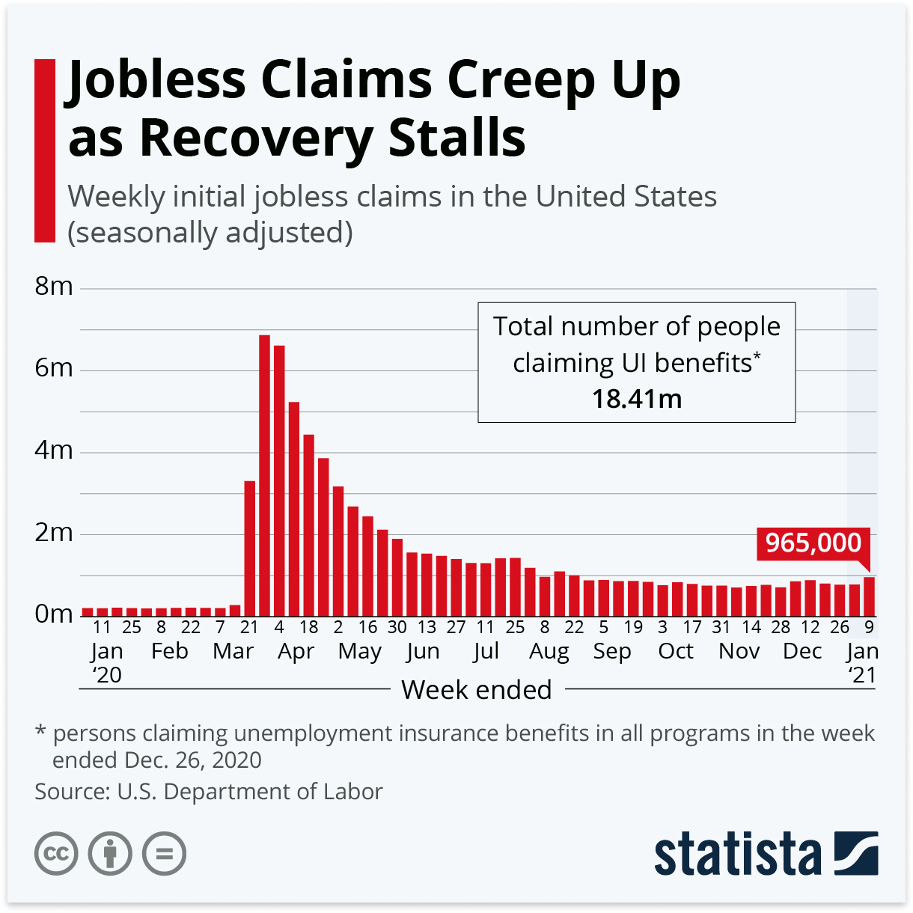
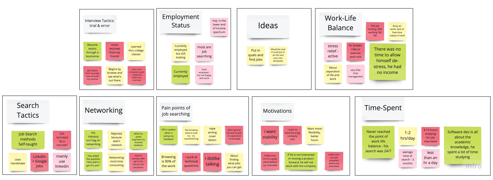
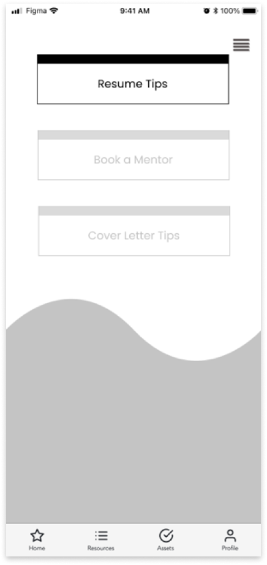

2.4 Joblify
MISSION: Design an app for a cause
PROBLEM: An overcrowded job market, made more chaotic by the COVID-19 pandemic, is making it hard for novice job-seekers to find new career opportunities. Studies have shown that the longer a person is job hunting, the lower their wellness factors. How can we assist users throughout the spectrum of their employment search, while making sure their wellness is not compromised?
TIMELINE: 3 weeks
ROLE: UX Researcher, UI Designer, Project Manager
TOOLS: Miro, Figma, Trello, Google Suite, ZOOM, Slack, GitHub, Adobe Illustrator
1. PREFACE

1. Due to COVID-19: Millions of people around the world have lost their jobs, sources of income, or been furloughed. This is a graph from the Department of Labor showing individuals claiming unemployment in 2020. As you can see, there was a big increase starting in mid march. The rate was 4.4%, which is higher than the great depression.
2. According to VeryWellMind.com, studies have shown that unemployment, and job searching has been linked to a greater risk of depression, anxiety, suicide, substance abuse, and violence.
With the big unemployment rate happening right now, we wanted to make an app that helps users through their job search journey. While at the same time, making sure their wellness factors do not get disrupted along their path.
2. RESEARCH
User Interviews: We interviewed 4 people on their job search process and work-life balance.
Affinity Diagram: We synthesized our interview notes into an affinity diagram, where we discovered that:
1. Networking is important
2. Not a lot of people ask for feedback once discovered they got rejected from a job interview
3. LinkedIn is a powerful tool for networking and job search

User Persona: We created Marc Findenberg after analying our affinity diagram
Competitive Analysis: We discovered that not many job search applications have a build in wellness feature.
3. IDEATION
Next, we dive into the I Like, I Wish, What If and Prioritization Matrix.
Key Takaways from this activity:
Storyboard:
Style Tile:
3. WIREFRAMES
Paper Wireframes:
01. Onboarding
02. Quiz

03. Home
04. Challenges
05. Resources
Lo-Fi Prototype:
1. At first, we wanted users to create an account before they can start using the app; however, we then decided it would be better to give users the option to skip to the Home page.
2. We wanted to implement a wave design to represent a nature, and water feel. We want users to feel they're on a journey to cross the finish line. In addition, we aim to make sure the users feel calm and relax. Many people said they loved this design!
3. The Home tab will have daily challenges regarding wellness and job search criterias.
4. Resources tab will have all the helpful guides to help with your job applications. For instance, resume and cover letter tips, and finding a mentor.
5. Asset tab will help users maintain their documents and links.

4. USER TESTING
Tasks:
1. Complete the LinkedIn Challenge
2. Review Resume Resources
3. Upload Resume & Cover Letter
Key Insights:
5. FINAL PROTOTYPE

6. FINAL THOUGHTS. WHAT'S NEXT?
1. How to make onboarding a more enjoyable and fun experience. Rewards?
2. Make a splash screen stating what this app does, or onboarding tutorials, and clear navigation bread crumbs
3. How do we make sure our users stay with us after they find a job? Mentorship?
4. Iterate and continue coding!

Other case studies: